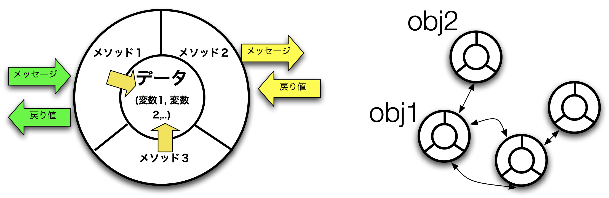

これまでに出てきたinput関数やprint関数などは、Pythonに最初から組み込まれている「組み込み関数」である。Pythonでは多くの組み込み関数が標準で用意されていて、すぐに利用できる。これ以外にも、すでに出てきたように、モジュールという形で組み込まれているものは、importで指定することで利用できるようになる。詳細は Python公式サイトのドキュメントを参照のこと。
Pythonで関数を作成するには、defを使って定義する。関数の中身はインデントして記述する。引数は ( ) (丸括弧) の中にカンマで区切って並べる。引数や戻り値のデータ型は指定する必要はない。
まずは引数/戻り値なしの関数の定義と実行をインタラクティブモードで試してみる。インタラクティブモードで関数の定義を入力する場合、関数の定義記述中は ... の表示となるので、同じインデントの深さで入力していき、最後にエンターキーのみを押してプロンプトを出す(>>>)。その後、この関数の呼び出しなどのメインの処理を入力する。
>>> def sayHello():
... print('Hello')
... print('Goodbye')
...
>>> sayHello()
Hello
Goodbye
>>>
この例では、show関数を定義した後、最後の行でこのshow関数を呼び出している。この関数は引数を2つ持ち、戻り値はない。また、f-文字列を使って変数の値を埋め込んでいる。
def show(arg1, arg2):
print(f'最初の引数は {arg1}で、2番目の引数は {arg2} です。')
show(10,12) # 関数の呼び出し
戻り値は他の言語と同じようにreturnを使う。
def add(arg1, arg2):
result = arg1 + arg2
return result
t = add(3, 5)
print(t)
def add(arg1, arg2):
return arg1 + arg2
でもよい。
関数の戻り値は基本的には１つだが、タプルやリストを返す関数にすると、複数の戻り値を返すことができる。特にタプルはかっこを省略できるので、複数の値を返す関数をより自然に記述できる。例えば次の例は、引数で与えた整数の割算の商と余りをタプルで返す関数である。関数呼び出し部分(下から2行目)の左辺はかっこを省略したタプルだが、タプルとして返された値がそれぞれaとbという変数に分かれて同時に代入されているので、アンパック代入と呼ばれる。この時、左辺と右辺の要素数は一致していないとエラーとなる。
def newdiv(x, y):
return x//y, x%y
a, b = newdiv(5 ,2)
print(f'商: {a}, 余り: {b}')
デフォルト引数を使うと、引数を省略した場合にあらかじめ設定した値を使うことができる。下の例では、最初のprint関数の第2引数を省略しているので、0.1が利用される。注意点としては、デフォルト値のない引数と混在する場合は、関数の定義でデフォルト引数を通常の引数の後にすること。先にデフォルト引数を持ってくるとエラーになる。
def taxcalc(price, rate=0.1): # ここで def taxcalc(rate=0.1, price): だとエラー
return price * (1 + rate)
print(taxcalc(100.0))
print(taxcalc(100.0,0.08))
また、Pythonの関数では、関数を呼び出す時に 仮引数の変数名 = 値(実引数) という使い方もできる。これをキーワード引数という。例えば上の Sample4_4.pyのprintの部分は、
print(taxcalc(price=100.0))
print(taxcalc(price=100.0,rate=0.08))
にすることもできる。また、このキーワード引数を使うことで、引数の順番を変えて、
print(taxcalc(rate=0.08,price=100.0))
とすることも可能になる。
関数の引数の変数名の前に*または**をつけると、可変長の引数にすることができる。*の可変長引数は関数内ではタプルとして扱われ、**の可変長引数は辞書として扱われる。通常の変数の引数と混在させる場合は、最後に可変長引数を置くか、*の場合は通常の変数をキーワード引数で指定する必要がある。辞書の場合は可変長引数は必ず最後におく必要がある。
def varprint(*args):
print(args)
def dicprint(**dic):
print(dic)
varprint(1)
varprint(1,2,3,4)
dicprint(算数=100, 英語=80)
dicprint(物理=60)
最近のプログラミング言語では、プログラミングパラダイム(プログラムの方法論)として、オブジェクト指向プログラミングをサポートする言語が一般的である。Pythonでも、クラスを作成してオブジェクト指向プログラミングができる。

Pythonではクラス中のメソッド定義の1番目の仮引数には、そのインスタンス自身を渡す変数の指定が必要(selfが慣習的に使われる)。呼び出し時(最後の行) にはこの引数は必要ない。
class Dog:
def bark(self): # メソッドの定義
print('わんわん')
a = Dog()
a.bark()
イニシャライザを使うと、インスタンス生成時にクラス名(引数)という形で引数として値を渡すことができる。以下の __init__関数がイニシャライザである。インスタンス変数は(第一引数をselfにした場合)、 self.name のように self.をつけてあらわす。この場合、実際に渡される引数は nameである。3行目で引数nameの値がインスタンス変数のnameに代入されている。
class Dog:
def __init__(self, name):
self.name = name
def bark(self): # メソッドの定義
print(f'{self.name}: わんわん')
a = Dog('シロ')
a.bark()
b = Dog('ポチ')
b.bark()
継承は以下のようにして記述する。Dogクラスを継承する盲導犬クラス(GuideDog)を作成するとする。GuideDogクラスの定義の1行目のように、継承元(スーパークラス)のDogを()の中に記述する。GuideDogクラスの定義では、このクラス独自の機能 (stopAtCurb(), avoidObstacle()メソッド)しか記述していないが、継承することによって、このクラス内にコピーしなくてもDogクラスのインスタンス変数やインスタンスメソッドを利用できる。
class Dog:
def __init__(self, name):
self.name = name
def bark(self): # メソッドの定義
print(f'{self.name}: わんわん')
class GuideDog(Dog):
def stopAtCurb(self):
print(f'{self.name}: 歩道の端で止まります')
def avoidObstacle(self):
print(f'{self.name}: 障害物をよけます')
a = Dog('シロ') # Dogクラスのインスタンス その1
a.bark()
b = Dog('ポチ') # Dogクラスのインスタンス その2
b.bark()
c = GuideDog('タロ') # GuideDogクラスのインスタンス
c.bark() # Dogクラスの bark()メソッドが使える
c.stopAtCurb() # GuideDogクラス独自のメソッド
アクセス制御は、オブジェクト指向をサポートする言語でよく使われる機能だが、Pythonではキーワード(修飾子)としては存在しない。外部から直接アクセスできないようにする(プライベート) には、 変数名やメソッド名の先頭に__ (アンダーバー２つ)をつける。例えば以下のプログラムは、そのままだと最後のprint(a.name)は問題なく表示されるが、self.nameをすべて self.__nameに変更して最後の行を print(a.__name)に変更すると、[実行結果その2] のようにエラーとなってアクセスできなくなることがわかる。
class Dog:
def __init__(self, name):
self.name = name
def bark(self): # メソッドの定義
print(f'{self.name}: わんわん')
a = Dog('マサル')
a.bark()
print(a.name)
Pythonでは、スーパークラスのメソッドをサブクラスでキーワードなしにそのままオーバーライド(重ね書き)できる。スーパークラスのメソッドの方を呼び出したい場合は、 super().を前につけて呼び出す。
class Dog:
def __init__(self, name):
self.name = name
def bark(self): # メソッドの定義
print(f'{self.name}: わんわん')
class GuideDog(Dog):
def stopAtCurb(self):
print(f'{self.name}: 歩道の端で止まります')
def avoidObstacle(self):
print(f'{self.name}: 障害物をよけます')
def bark(self): # オーバーライド
print(f'{self.name}:きゃんきゃん (オーバーライド)')
super().bark() # 親クラスのbark()を呼ぶ場合
c = GuideDog('タロ')
c.bark() # オーバーライドされたbark関数の呼び出し
すでにモジュール (パッケージ) の呼び出し方については「Pythonの基礎2」で紹介したが、ここでは自作の関数やクラスをモジュールにしたり、パッケージにしたりして利用する方法を説明する。
まずは、復習から。モジュールを自分のプログラムから利用するには、主に以下の3パターンが使われる。
import モジュール名
importを使って外部のモジュールを読み込んで利用。この場合 モジュール名.関数名やモジュール名.変数名 で呼び出す
import math
print(math.pi)
import モジュール名 as 別名
外部モジュールを読み込んで、以降別名で表記
import numpy as np
narray = np.array([[1,2,3] , [4,5,6]])
...
from モジュール名 import クラス名 (あるいは関数名、変数名)
外部モジュールの関数名やクラス名などを、モジュール名を省略して直接呼び出す
from numpy import sqrt
print(sqrt(3))
すでに出てきた Sample4_1.py のshow()関数を自分のプログラム myprog.pyで再利用したいとする。Sample4_1.pyと同じ場所に、以下の内容でmyprog.pyを作成する。ここでは Sample4_1(a).pyがモジュールファイルとなる。
import Sample4_1
print("myprogを実行します")
Sample4_1.show(100,100)
しかし、これを実行 (python myprog1.py)すると、
最初の引数は 10で、2番目の引数は 12 です。
myprogを実行します
最初の引数は 100で、2番目の引数は 100 です。
となってしまう。実行結果の1行目が表示されたのは、Sample4_1.pyの中に元々あったshow()関数を呼び出すコードが実行されたためである。Sample4_1.pyをモジュール専用としてしか利用しないのであれば、Sample4_1.pyからこの呼び出し部分を削除して関数定義だけにすればよい。
あるいは、以下のように、if文の中に直接実行の処理を入れると、モジュール呼び出しでも単体で直接実行 (python Sample4_1a.py) でも対応可能になる。
def show(arg1, arg2):
print(f'最初の引数は {arg1}で、2番目の引数は {arg2} です。')
if __name__ == '__main__':
print("Sample4_1aを直接実行")
show(10,12)
Sample4_1aをインポートして利用した例。2行目を3行目のコメントの行に置き換えると、モジュール名を省略して呼び出せる (最後のコメント行)。
# Sample4_1aに変更
import Sample4_1a
# from Sample4_1a import show
print("myprogを実行します")
Sample4_1a.show(100,100)
# show(100,100)
Sample4_1aを直接実行した結果は、
実行結果 (Sample4_1a.py)
クラスの場合も、全く同じように
class Dog:
def __init__(self, name):
self.name = name
def bark(self): # メソッドの定義
print(f'{self.name}: わんわん')
class GuideDog(Dog):
def stopAtCurb(self):
print(f'{self.name}: 歩道の端で止まります')
def avoidObstacle(self):
print(f'{self.name}: 障害物をよけます')
def bark(self): # オーバーライド
print(f'{self.name}:きゃんきゃん (オーバーライド)')
super().bark() # 親クラスのbark()を呼ぶ場合
if __name__ == '__main__':
c = GuideDog('タロ')
c.bark() # オーバーライドされたbark関数の呼び出し
クラスの場合も1行目を2行目の内容に置き換えると、イニシャライザを呼び出す際にモジュール名 (Sample4_10a) を省略できる。
import Sample4_10a
# from Sample4_10a import GuideDog
print("myprogを実行します")
a = Sample4_10a.GuideDog('タロ')
# a = GuideDog('タロ')
a.bark()
次にパッケージを作成してみる。パッケージは複数のモジュールファイルを１つのフォルダ(ディレクトリ)にまとめたもので、通常そのフォルダには __init__.pyファイルも用意しておく。以前のバージョンではこのファイルは必須であったが、現在はなくてもパッケージとして利用はできる。ただし、以下で説明するように単一モジュールと同じように利用するためには__init__.pyの設定が必要となる。
例えば、以下のような構成でパッケージ pack1を作成したとする。
├── myprog3.py
└── pack1
├── __init__.py
├── module1.py
└── module2.py
まずは中身は空でファイルだけ作成する
def func1():
print("pack1内のmodule1内のfunc1を実行しました")
def func2():
print("pack1内のmodule2内のfunc2を実行しました")
これらをmyprog3.pyから呼び出すには、以下のように記述する。基本はfunc1()関数のようにパッケージ名.モジュール名.関数名 だが、func2()関数のように、2行目に指定したfrom...import を使えば パッケージ名.モジュール名 を省略して呼び出すことはできる。
import pack1.module1
from pack1.module2 import func2
pack1.module1.func1()
func2()
しかし、使う側 (myprog3.py) でパッケージ名とモジュール名を指定するのは面倒となる。単一モジュールファイルと同じように、パッケージ名だけをインポートして利用できるようにするには、 __init__.pyに以下のように各モジュールで定義されている関数をimportで一つ一つ記述しておく。全ての関数をまとめてインポートしたい場合はワイルドカード (*)を使うこともできる。
from pack1.module1 import func1
from pack1.module2 import func2
# 同じpack1内のファイルなので、上の2行は以下のようにも記述できる
# from .module1 import func1
# from .module2 import func2
# また各モジュール内の全ての関数をimportする場合はワイルドカードを使うことも可能
# from .module1 import *
# from .module2 import *
以上の設定を行うと、myprog4.pyは以下のようにシンプルに記述できる。最後の行のようにあえてモジュール名を明記して呼び出すこともできる。例えば、module1とmodule2に同じ名前の関数があった場合に、モジュール名で区別して呼び出すことができる。
import pack1
pack1.func1()
pack1.func2()
# あえてモジュール名を明記
pack1.module2.func2()